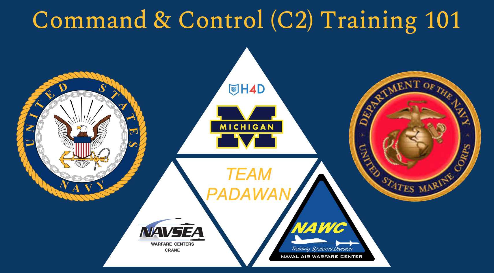

Projects
I have listed below three of the most interesting projects I have been a part of as a student at Michigan as well as my internship experience during Summer 2021.
C2 Training 101
We were tasked with developing a training regimen for sailors and marines to effectively utilize complex surveillance systems due to insufficient available training options. Once we learned that the C2 systems were too complex to use, we realized this was leading to a proficiency gap which pushed personnel away from using the system. We recommended devising a self-guided, adaptive training module that could be deployed across various platforms to meet user needs.
Computing 4 Data Literacy
The project intends to increase social studies teachers’ use of online tools to aid students’ understanding of data visualizations. With increased exposure to programmable tools, the project aims to increase student performance in social studies courses and student interest in computer science. Aside from polishing the site, I was responsible for uploading primary data visualizations for each of the K-12 Michigan social studies learning standards present on our site. I also created scrubbed data sets that contained data students could interact with using the online tools present on the site.
Digital Studies Project
For my final project, I created a video using Adobe Premiere Pro to address how facial recognition systems are increasingly being used by police departments across the U.S. to identify criminals and reduce crime. My video was a critique on using facial recognition systems in policing as they contain deep-rooted racial biases which expounds prejudice in crime prevention and poses dire consequences for marginalized communities.
GM Financial
At GM Financial, I worked in the International Operations Data Governance Office (DGO) as a Data Management Intern. I mostly worked on their internal query search engine which was IBM’S Information Governance Catalog (IGC). In addition to correcting incorrect term definitions present in the IGC, I mapped source data elements to their appropriate IGC terms. I also used Oracle SQL to investigate indicator values that had discrepancies between what their definition said their value should be and what the actual value was. My internship ended with me giving a final presentation to my team and senior members of the DGO office.